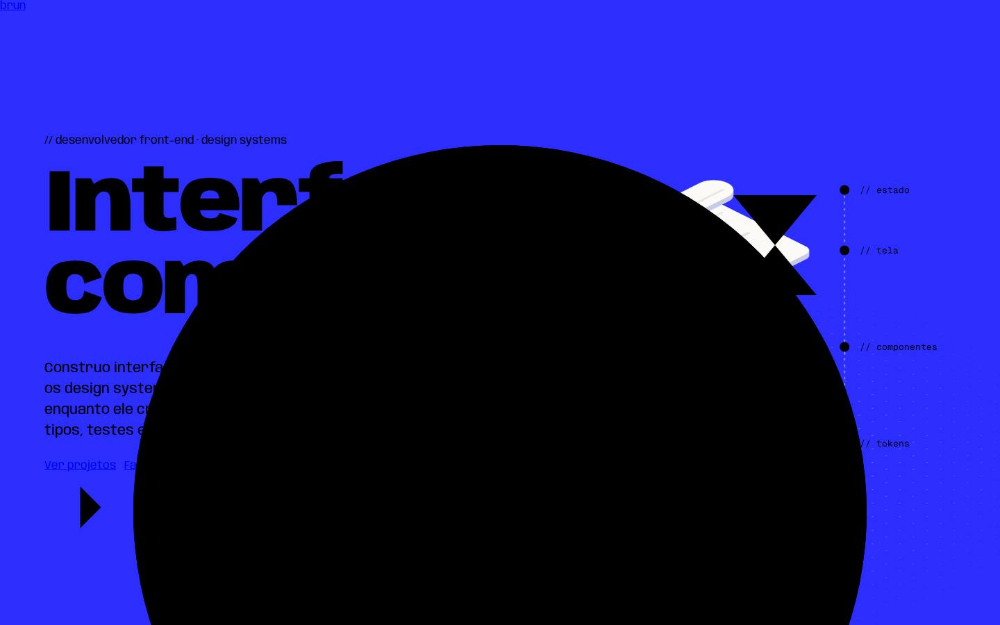
InícioA pilha aberta, como aprovada.
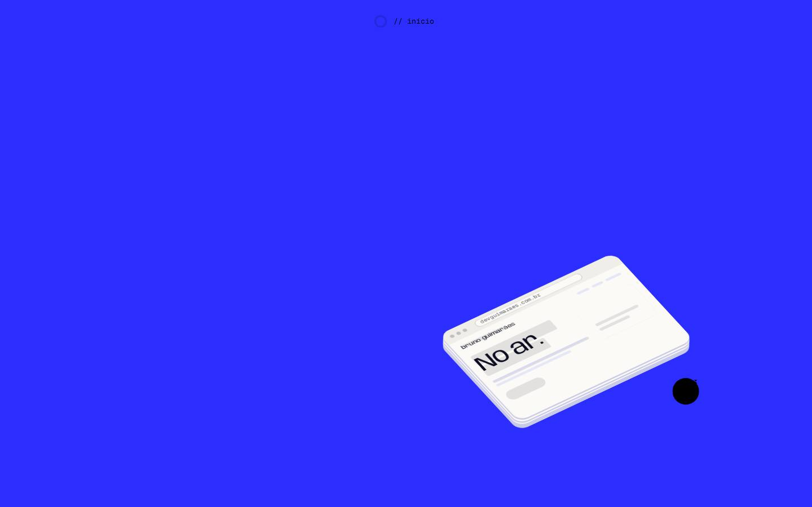
A pilha fechaGira de frente e vira a tela do capítulo seguinte.
EstadosNovo. O visitante publica, falha e tenta de novo.
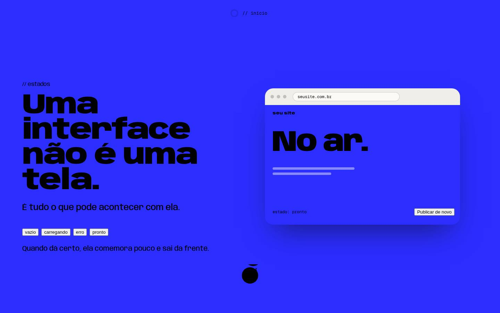
PassagemO Giro pousa e a próxima cor sai dele.
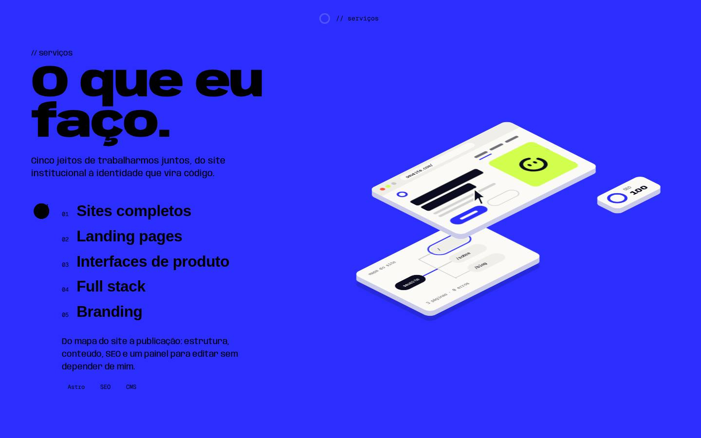
ServiçosUm palco, cinco trocas, sempre a mesma medida.
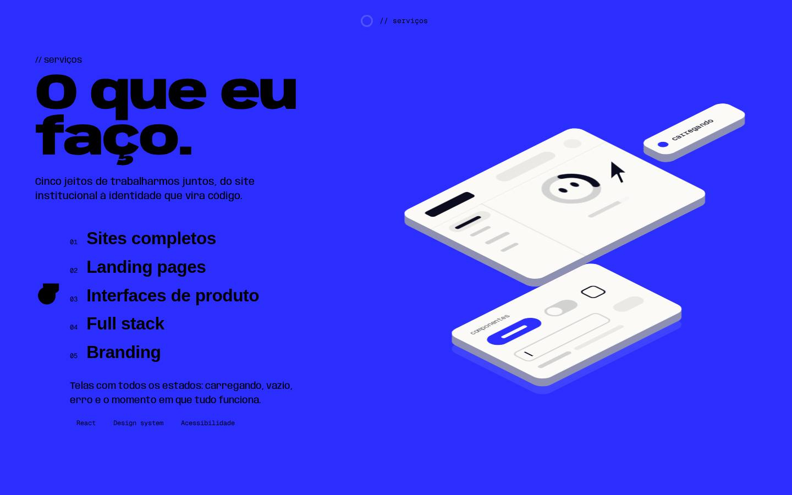
ServiçosO Giro salta de estação e o painel muda de cor.
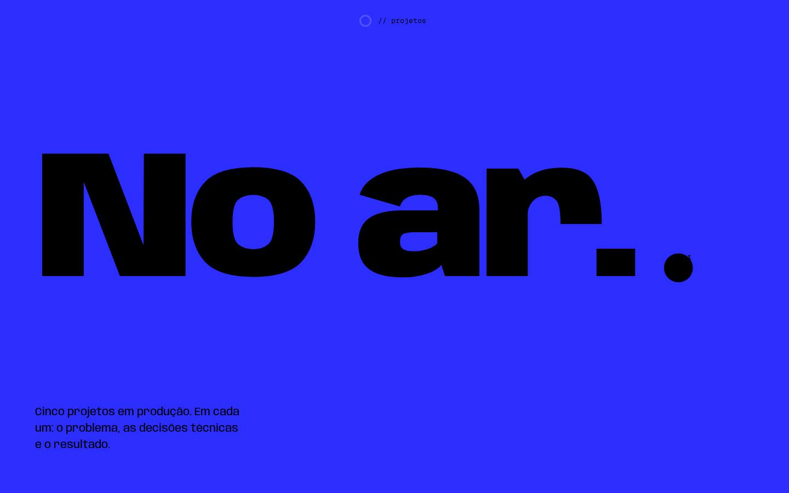
No ar.O título se desdobra antes da primeira janela.
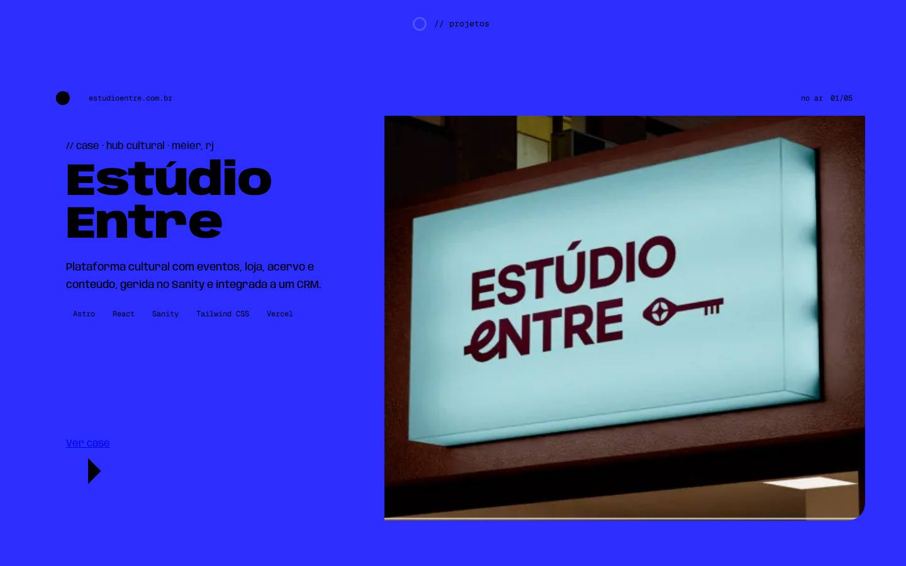
JanelasO Giro é o carregando de cada site.
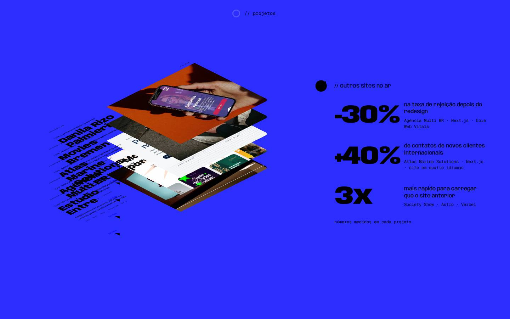
Projetos deitamAs cinco janelas viram pilha ao lado dos números.
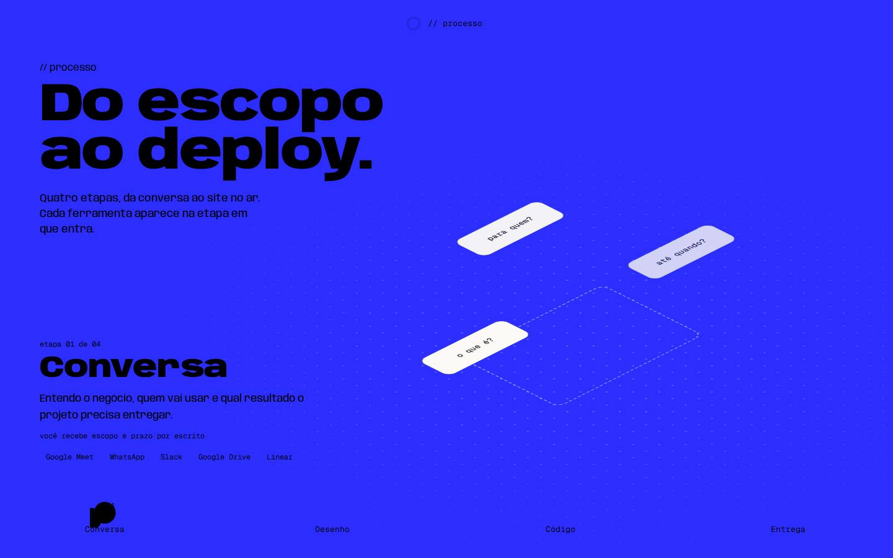
ConversaA interface ainda é contorno e pergunta.
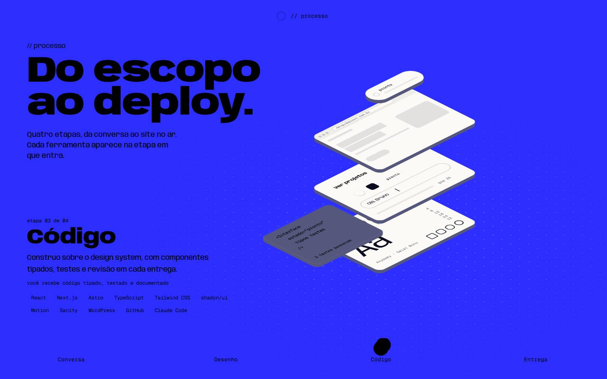
CódigoA mesma interface aberta em camadas.
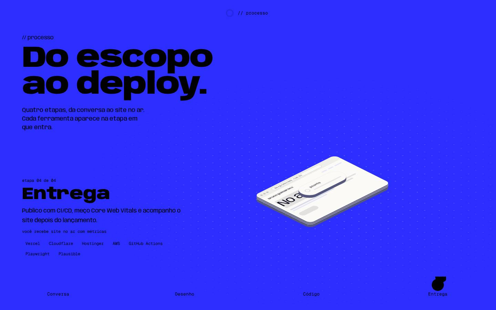
EntregaFecha, pinta e vai ao ar.
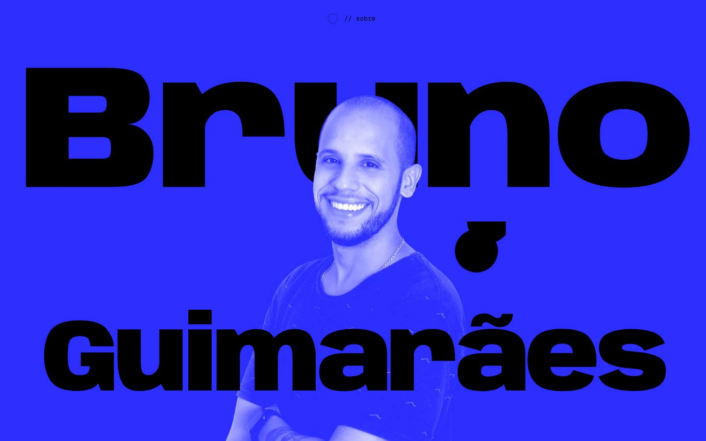
SobreO nome passa por trás de você.
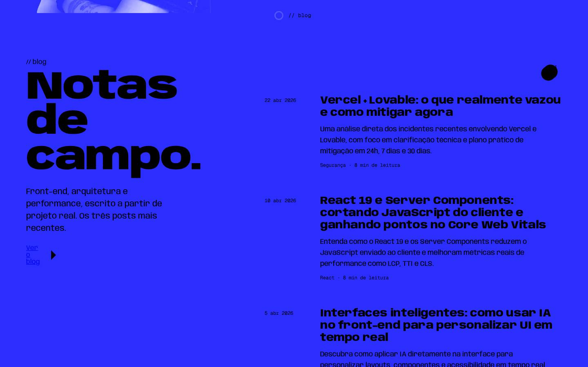
Notas de campoO capítulo calmo. O Giro cochila até alguém chegar.
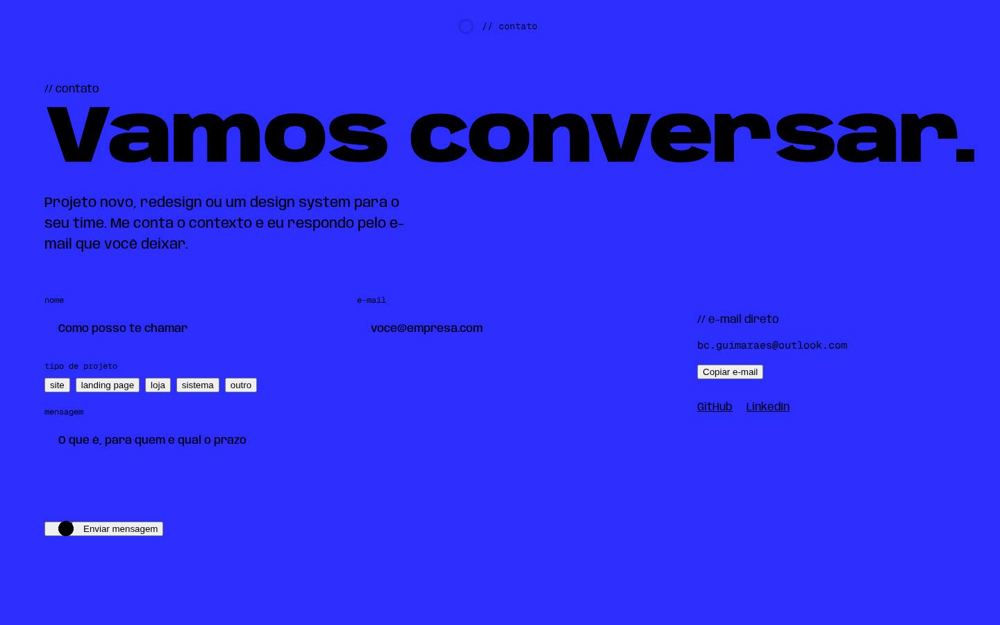
ContatoO Giro vira o botão e ouve quem escreve.
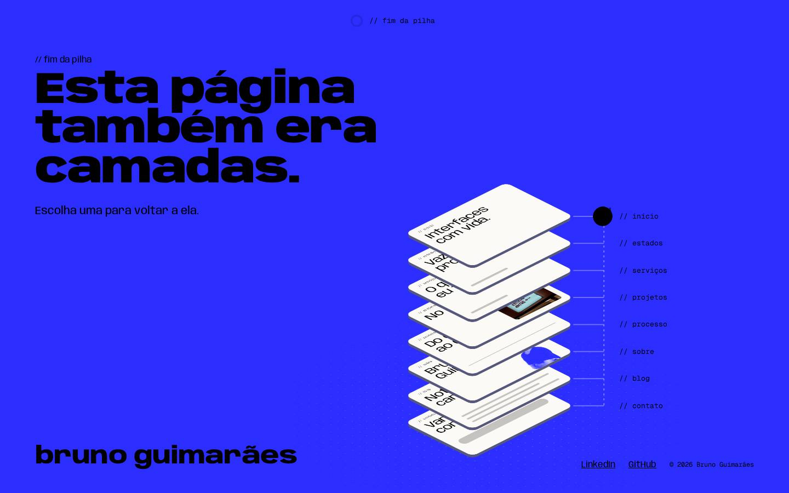
FimNovo. A página inteira é a pilha, e cada camada é um link.